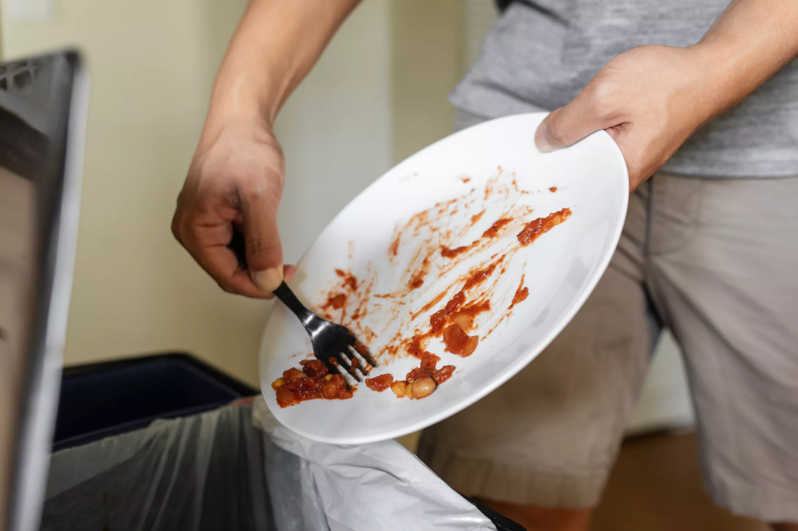

Scrape the dishes to remove leftover food residue by using a rubber spatula or paper towel into a trashbin or composter. For stuck on food residue, make sure to soak the dish in hot water for about 5 –10 minutes to prevent scratching on the dish.For some people, they recommend soaking all the dishes in hot soapy water for 10 –15 minutes. Yet for others with busy schedules, soak the needed dishes while you prep the remaining ones.
